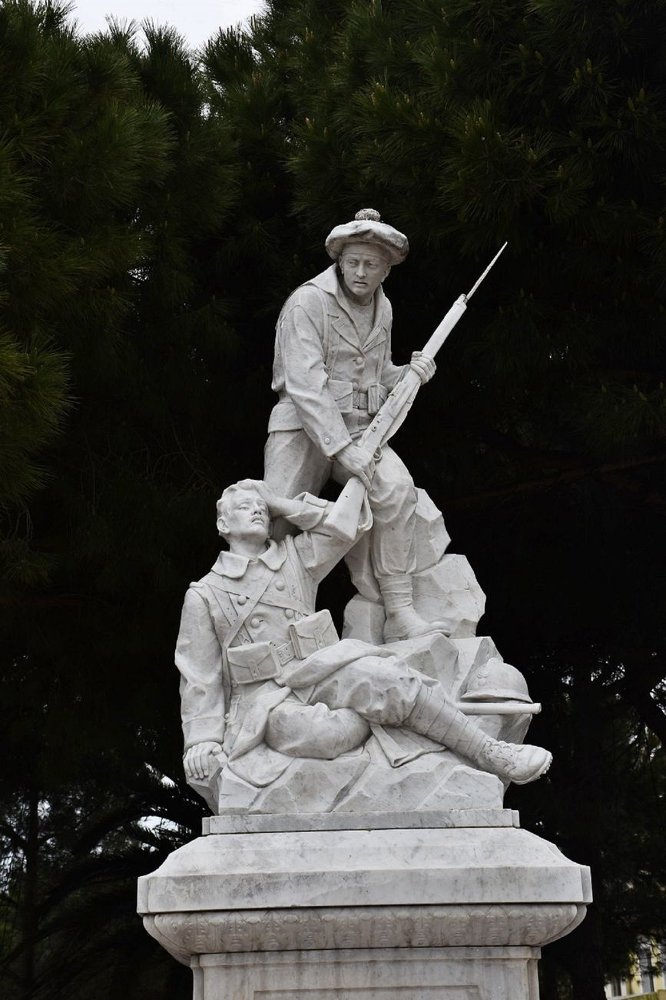
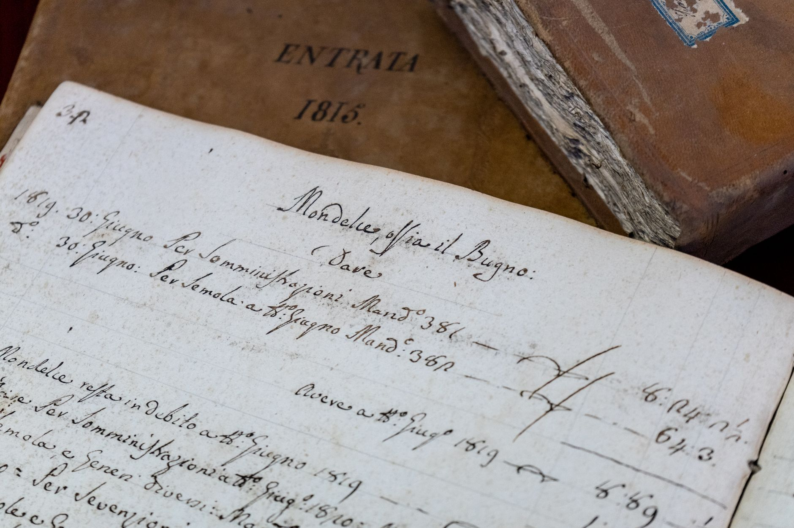

Season 1, Episode 5 — Lee's Generation (Classes of 1828–1829)

The most revered figure in Confederate history. The most brilliant engineer the South wasted. And the president who trusted one and despised the other — all three within a year of each other at West Point.
Start with a fact that seems impossible: Robert E. Lee is the only cadet in West Point history known to have graduated without receiving a single demerit in four years. Not one. His classmates called him "the Marble Model" — not because he was cold, but because he seemed perfect.
Lee was born to a Revolutionary War hero family — his father was "Light-Horse Harry" Lee, one of Washington's most famous cavalry commanders. But the glory was in the past. Harry Lee died when Robert was 11, leaving the family in reduced circumstances. Young Robert grew up in a genteel poverty that taught him discipline, self-reliance, and the desperate importance of reputation.
At West Point, Lee excelled at everything. He graduated 2nd in the Class of 1829 — behind only Charles Mason, who left the army and became a Supreme Court justice in Iowa territory. Lee chose the Corps of Engineers, the elite branch reserved for the top graduates. He married Mary Custis, great-granddaughter of Martha Washington, and lived at Arlington House — the Custis family estate overlooking Washington, D.C.
He served as Superintendent of West Point from 1852 to 1855, shaping the next generation of officers — including the boys of the Class of 1846 who would later fight for and against him.
When the war came, Lee was offered command of the Union army. He declined. The next day, he resigned his commission. His decision to join the Confederacy was agonizing. He wrote: "I cannot raise my hand against my birthplace, my home, my children."
"I cannot raise my hand against my birthplace, my home, my children." — Robert E. Lee, on why he could not fight for the Union
As a commander, Lee was audacious, aggressive, and beloved by his men. He consistently outmaneuvered larger Union armies and made the Army of Northern Virginia a legend. His flaw: he trusted his instincts too much. Gettysburg was his worst gamble — and he lost.

Lee's letters reveal a man torn between duty to his country and loyalty to his home state
Joseph E. Johnston graduated in the same class as Lee — Class of 1829. He was also a Virginian, also an engineer, also brilliant. But his career path diverged in ways that would cripple the Confederacy.
Johnston was the senior-ranking Confederate commander early in the war — until he was wounded at Seven Pines (Fair Oaks) in June 1862. Lee replaced him. And Lee never gave the command back.
That wound was the least of Johnston's problems. The real war was with Jefferson Davis.
Johnston and Jefferson Davis hated each other. The feud ran so deep that it crippled Confederate command for the entire war. Possible causes:
Davis distrusted Johnston's caution. Johnston was a retreat-and-preserve-the-army strategist — the Confederacy's version of McClellan. Davis wanted audacity. Johnston wanted survival. They spent the war bickering through letters, and it destroyed any hope of coordinated strategy in the Western Theater.
Remarkably, Ulysses S. Grant considered Johnston "one of the most competent Southern generals." Johnston surrendered the last major Confederate army in April 1865 — after Lee had already surrendered at Appomattox. And after the war, Johnston and Davis continued feuding for decades.
Jefferson Davis graduated one year ahead of Lee and Johnston — Class of 1828, ranked 23rd of 33. He was near the bottom of his class. But his trajectory after West Point took him into politics, not engineering.
Davis served in the Black Hawk War and the Mexican-American War, then became a Mississippi senator. He was Secretary of War under President Franklin Pierce from 1853 to 1857 — the same role from which he may have first developed his animosity toward Johnston. When the Confederacy formed, he was elected its president — a job he didn't want but accepted out of duty.
His management style was micromanagement. He interfered with his generals constantly. He loved and trusted Lee completely, giving him everything he needed. He despised Johnston and sidelined him, starving him of resources. The contrast could not be starker — and the Confederacy paid the price.
After the war, Davis was imprisoned for two years, charged with treason, but never tried. He lived another 24 years, writing his defense of the Confederacy and feuding with Johnston from a distance.
This triangle damaged the Confederate war effort more than any Union general could have. The South's two best commanders could not work together because the man in the middle despised one and adored the other.
The Old Guard at a Glance:
How this works: Work through each phase in order. Don't scroll ahead to the answers.
Cover the answers below. For each clue, respond in the form of "Who is…" or "What is…". Answers are at the bottom of this page.
Phase 1 (Fill-the-Blank):
Phase 2 (Core Jeopardy):
Phase 3 (Previously On… — Modules 1–4):
In Module 6, we turn to Mexico — the training ground. The war where they all fought together. Grant and Lee on the same side for the only time in their lives. The crucible that taught a generation of West Pointers how to command. If Lee's generation was the old guard and the Class of 1846 was the star class, Mexico was where they all learned to fight — together, before they had to fight each other.
Elizabeth Brown Pryor's Reading the Man: A Portrait of Robert E. Lee Through His Private Letters offers a nuanced, critical view of Lee that cuts through the myth. For the Davis–Johnston feud, Steven Woodworth's Jefferson Davis and His Generals is the definitive account of how personal relationships shaped — and damaged — Confederate command.
For the broader context of the pre-war generation, John C. Waugh's The Class of 1846 also covers the older classes who mentored the '46 boys in Mexico.
Have questions? Want me to dig deeper into the Davis–Johnston feud, or explore Lee's pre-war career as an engineer? Just ask — I'm your teacher.